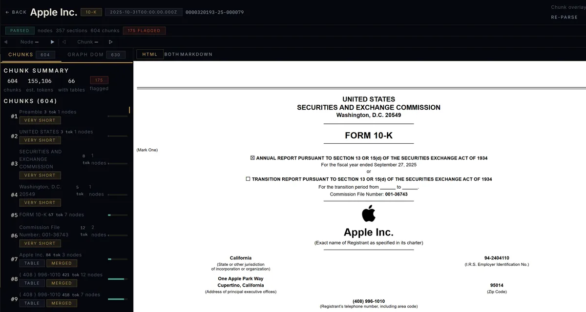
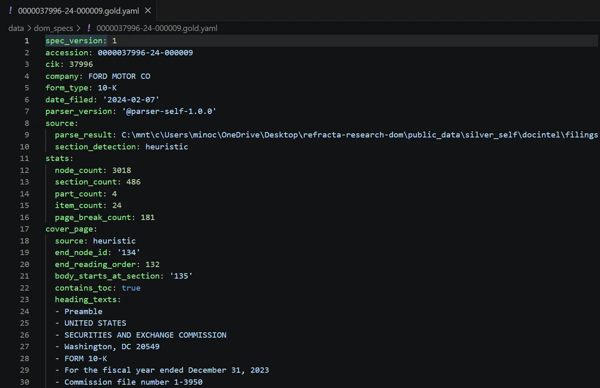
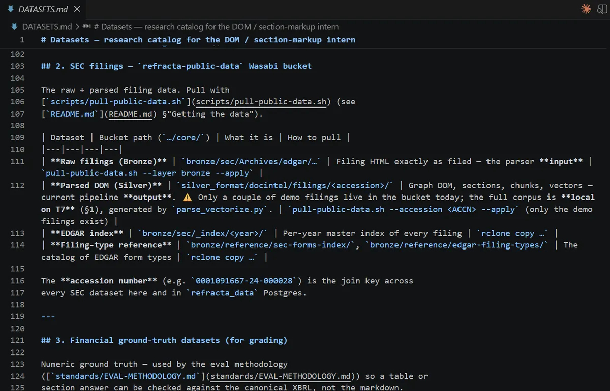
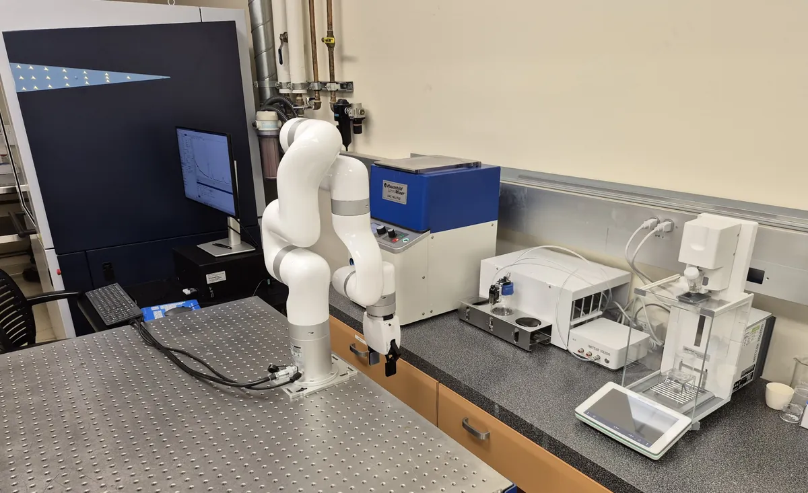
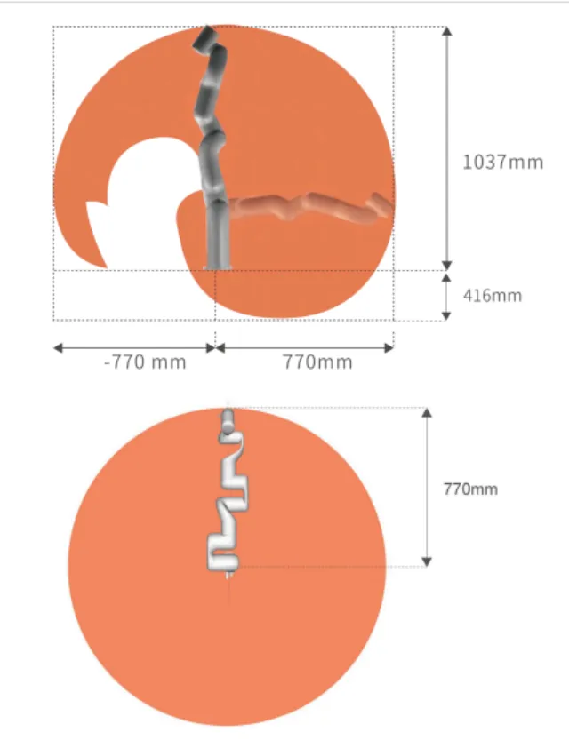
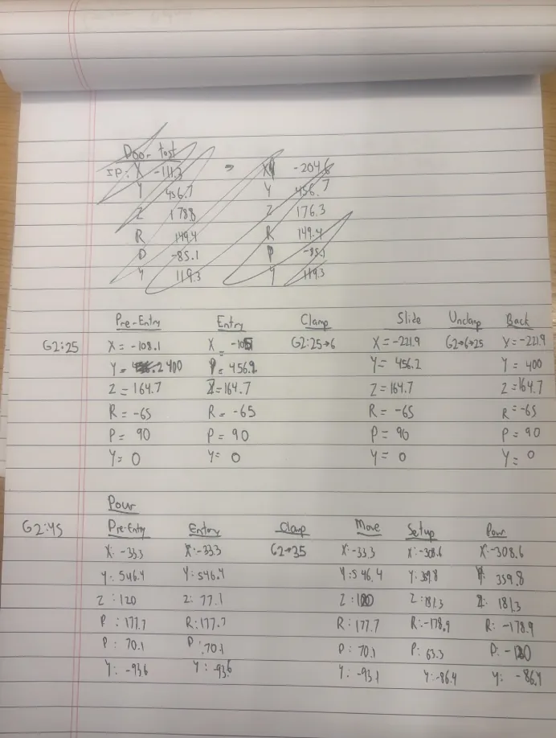

Experience
AI Research Intern
Refracta Research Inc • New York City, NY
Jun 2026 — Present

Parsed 10-K in the DOM inspector

Gold-label spec for a 10-K filing

SEC filings dataset catalog
- Working on document intelligence for financial filings — turning EDGAR's sprawling, inconsistent SEC filing HTML into structured, queryable representations that downstream retrieval and analysis pipelines can trust.
- Built a measurement-first gold-label pipeline for SEC filing structure detection, creating an algorithm for labeling a ground-truth corpus spanning three EDGAR form types and designing and documenting the full evaluation harness with item- and part-level recall metrics.
- Used Python and Pydantic to fix the DOM spec generation pipeline, including a cursor-race defect in HTML anchor detection that caused nodes to fail position mapping, and built a verification pass that corrected all page-break positions.
- Researched DocLang as an AI-native document representation for SEC filing output, evaluating its semantic structure and metadata model against the production Graph DOM and retrieval pipeline to assess its feasibility as an analysis format.
Mechanical Engineering Undergraduate Researcher
Materials Design through Dynamics Lab • UCLA
Jan 2026 — Present

xArm at the automated mixing station

xArm reach envelope

Waypoint calibration notes
- Researcher in Dr. Nathan Szymanski's Materials Design through Dynamics group, which combines robotics, machine learning, and in-situ characterization to accelerate the synthesis of inorganic materials for energy technologies like batteries, fuel cells, and hydrogen production.
- Programmed, mapped, and calibrated a complete experimental routine for a 6-DOF UFactory xArm robotic arm using ROS2 and Python, automating material mixing so synthesis experiments can run with minimal human intervention — a step toward the lab's closed-loop "self-driving laboratory" vision.
- Developed a generative AI model for predicting the results of inorganic material synthesis and categorization, increasing experimental throughput by 75%, and compiled generated results to design further advanced experiments for the robotic module.
Powertrain Project Engineer
Bruin Racing Baja • UCLA
Jan 2025 — Present

FEA of a gear under torque load

Measuring a CV joint in SolidWorks

Machined bevel gear set
- Designed and modeled compound gearbox housings in SolidWorks, creating over 15 detailed CAD assemblies and manufacturing drawings with geometric dimensioning and tolerancing (GD&T) down to ±0.001 inches to ensure correct tolerance stack-up during assembly.
- Machined more than 25 custom shafts, bearings, and housings using CNC milling, CNC turning, and EDM equipment, ensuring surface finishes within Ra 32 microinches for smooth bearing operation under heavy torque loads.
- Performed over 12 finite element analysis (FEA) simulations on gear meshes and housing components under torque loads of up to 150 N·m, applying both static stress and fatigue-life analyses to predict crack initiation and cyclic load performance.
- Reduced gearbox mass by 12% through topology optimization while maintaining a safety factor above 2.0, verified via von Mises stress distributions and resonance frequency checks.
- Collaborated with chassis and suspension subteams to integrate gearbox mount points using kinematic and dynamic interference checks, reducing installation and alignment time by 20%
Systems Integration and Operations Intern
Civ Robotics • San Francisco
Jun 2025 — Sep 2025

Rover path & velocity analysis

Dual-LiDAR coverage simulation

Beam detection at a solar farm site
- Integrated GPS, LiDAR (Ouster OS1-32), IMU, and Intel RealSense D456 RGB-D data into real-time SLAM pipelines, achieving centimeter-level localization accuracy in solar farm environments.
- Developed Python and C++ ROS2 nodes for parsing and synchronizing multi-sensor datasets, implementing Kalman filters and timestamp protocols to achieve sub-5 ms latency across all streams.
- Built visualization dashboards in Python with Matplotlib, Open3D, and RViz to validate point cloud fidelity and obstacle detection accuracy during rover testing.
- Validated over 50 rovers prior to field deployment through regression testing of CANbus-integrated PID control loops, confirming closed-loop stability and path-following accuracy.
- Automated remote diagnostics with SSH scripts that retrieved logs and flagged errors, reducing customer troubleshooting tickets by 35%.
- Standardized calibration and operating procedures for GPS-IMU-LiDAR setups, cutting technician onboarding time by 20% and ensuring deployment consistency across 10+ field teams.
Research Assistant
UC Berkeley • Hybrid Robotics Lab
Aug 2023 — Jan 2024

Player & ball tracking on match footage

YOLOv5 detection pipeline code

A1 vs. Mini Cheetah goalkeeper test
- Implemented YOLOv5 convolutional neural networks for soccer player and ball detection, achieving mean average precision (mAP) above 0.85 across multiple datasets.
- Applied ByteTrack for multi-object tracking and fused predictions with Kalman filters, increasing motion trajectory accuracy by 40% compared to baseline models.
- Optimized hyperparameters including anchor box dimensions, learning rates, and confidence thresholds, leveraging GPU acceleration to reduce training times by 30%.
- Integrated detection outputs into quadrupedal robot control nodes, enabling autonomous goalkeeping and shooting behaviors in adversarial testing environments.
Agricultural Engineering Researcher
University of Florida
Jun 2023 — Aug 2023

Salt-tolerance research poster

Live pH, EC & temperature data

plantCV germination image analysis
- Analyzed crop performance under saline irrigation, determining that ~22% seawater produced optimal yield while reducing freshwater use by nearly 40%.
- Built OpenCV-based seed germination analysis pipeline that processed over 1,500 samples, automating sprout measurement with image thresholding and blob detection.
- Wired and calibrated load cell sensors with ±0.01 mg accuracy to monitor transpiration rates and water mass changes, integrating with Arduino data loggers and MATLAB visualization.
- Constructed a growth chamber with a 12-hour artificial photoperiod and thermal cycling, embedding pH and salinity electrodes with DAQ systems for real-time monitoring.
- Contributed findings to an NSF-funded research effort on sustainable saline agriculture for coastal and resource-limited environments.